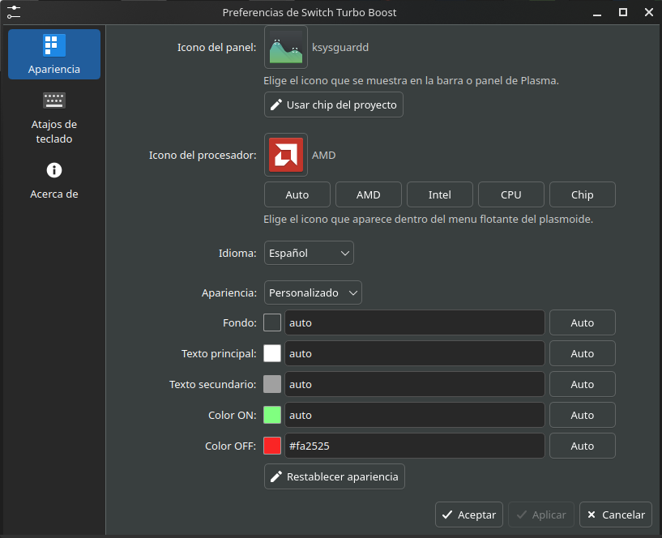
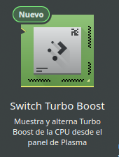
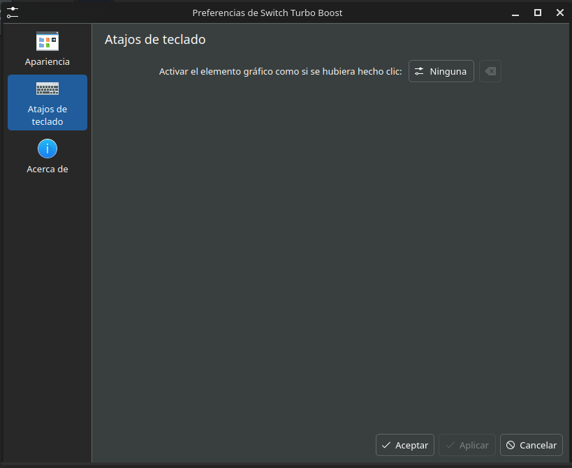
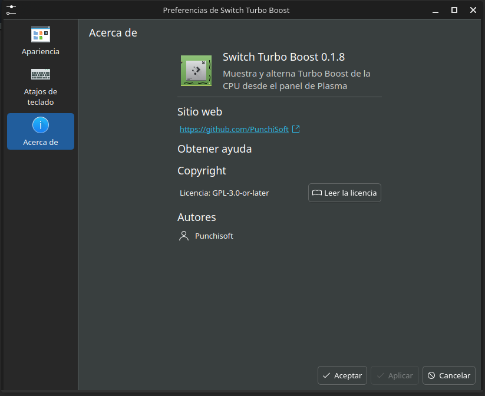

Switch Turbo Boost Plasmoid es un elemento gráfico para KDE Plasma 6 pensado para usuarios que quieren controlar rendimiento, consumo, temperatura y ruido desde un lugar visible del escritorio. En la versión 0.2.0 el enfoque sigue siendo liviano, pero ahora entrega más contexto sobre el procesador detectado y se adapta mejor a la apariencia del sistema.
Un gesto pequeño para una decisión frecuente
Turbo Boost puede mejorar el rendimiento cuando el equipo lo necesita, pero también puede aumentar temperatura, ruido y consumo energético. En Linux, consultar o cambiar ese estado suele llevar a rutas de /sys, comandos concretos y permisos administrativos. Para una acción frecuente, esa fricción se nota.
La idea del plasmoide es reducir ese recorrido a una interacción clara: ver el estado actual y alternarlo con un clic desde Plasma. No intenta automatizar políticas complejas ni prometer resultados mágicos. Su objetivo es hacer visible una decisión técnica y dejar que el usuario la tome con contexto.
El plasmoide no reemplaza el diagnóstico completo: entrega un control inmediato para el panel.
Qué muestra la interfaz
El widget aparece como un icono compacto en el panel. Al abrirlo, muestra si se detectó una CPU AMD, Intel o genérica, el modelo real del procesador cuando está disponible, el estado de Turbo Boost, un interruptor ON/OFF, una descripción del modo activo y un botón para comprobar manualmente el estado. Además realiza lecturas periódicas cada 15 segundos, de modo que la vista se mantiene actualizada sin exigir atención constante.
El texto de la tecnología también cambia según el fabricante: Turbo Boost en Intel, Precision Boost / Core Performance Boost en AMD y CPU Boost como alternativa general. Esa estructura busca que el usuario entienda rápidamente qué está pasando sin tener que interpretar rutas de sistema o mensajes crípticos.
Novedades de la versión 0.2.0
Esta actualización pone el acento en claridad visual y mejor identificación del hardware. Los iconos de AMD, Intel, CPU y chip se actualizaron usando recursos basados en Papirus Icon Theme, y el menú flotante puede usar colores del tema de Plasma o una paleta personalizada desde las preferencias.
También se reorganizó la configuración para separar mejor el icono del panel, el icono del procesador dentro del menú, el idioma, el tamaño del popup y los colores de la interfaz. El resultado es un plasmoide más fácil de reconocer en el panel y más cómodo de adaptar a distintos escritorios.
Preferencias sin recargar la experiencia
La configuración permite separar el icono del panel del icono del procesador mostrado dentro del menú flotante. El icono del procesador puede quedar en modo automático, usar presets para AMD, Intel, CPU o chip, o elegirse manualmente desde el selector de iconos del sistema.
También se puede ajustar el idioma de la interfaz, el tamaño preferido del menú y la apariencia visual. El modo automático toma colores del tema de Plasma, mientras el modo personalizado permite elegir colores propios y volver a Auto por cada valor cuando convenga.

Cómo está construido
La interfaz está escrita en QML, siguiendo la forma natural de los plasmoides de KDE Plasma. La lectura y escritura del estado se delega a scripts Bash. Esa separación mantiene el código visual enfocado en la experiencia y deja las operaciones del sistema en helpers específicos.
El proyecto separa la interfaz del backend privilegiado. Esto permite actualizar solo el plasmoide cuando cambian archivos QML, iconos, textos o configuración, o solo el backend cuando se modifican scripts del sistema. El ID del plasmoide es org.punchisoft.switchturbo y la versión documentada para esta publicación es 0.2.0.
Instalación y archivos del sistema
El plasmoide se instala para el usuario en ~/.local/share/plasma/plasmoids/org.punchisoft.switchturbo/. Los helpers del sistema viven en /usr/local/libexec/switch-turbo-boost-plasmoid/ y la política de autorización se registra en /usr/share/polkit-1/actions/org.punchisoft.switchturbo.policy.
El repositorio incluye scripts separados para instalar solo la interfaz, instalar el backend, ejecutar una instalación completa o desinstalar el proyecto:
chmod +x install.sh install-plasmoid.sh install-backend.sh scripts/*.sh
./install.shEsta división facilita probar cambios visuales sin tocar permisos del sistema, y mantener bajo control las partes que sí requieren privilegios.
Seguridad: privilegios bien delimitados
El QML no escribe directamente en /sys ni invoca sudo desde la interfaz gráfica. Para cambiar el estado de Turbo Boost se llama a pkexec sobre scripts instalados bajo /usr/local/libexec/switch-turbo-boost-plasmoid/. PolicyKit limita la autorización a esos ejecutables concretos.
La lectura del estado no requiere privilegios; la escritura sí requiere autenticación administrativa. Esta distinción es central: una herramienta cómoda no debería convertir toda la interfaz en un proceso privilegiado.


Compatibilidad
El proyecto está pensado para KDE Plasma 6, tanto en sesiones Plasma Wayland como X11. Requiere Linux con PolicyKit y pkexec, además de un CPU/kernel que exponga /sys/devices/system/cpu/cpufreq/boost o /sys/devices/system/cpu/intel_pstate/no_turbo.
Cuando esas interfaces existen, el plasmoide puede consultar el estado y solicitar autorización para alternarlo. Si el equipo no expone esas rutas, la herramienta debe tratarlo como una limitación del hardware, del kernel o de la configuración disponible.
Un complemento para Switch Turbo Monitor
Switch Turbo Monitor sigue siendo la herramienta completa para ver recursos, perfiles y diagnóstico del sistema. Switch Turbo Boost Plasmoid ocupa otro lugar: el panel. Está pensado para esa decisión puntual de activar o desactivar Turbo Boost mientras se trabaja, sin interrumpir el flujo con una ventana más grande.
Ambos proyectos comparten una misma idea: acercar decisiones de rendimiento a una interfaz comprensible, cuidando los permisos y mostrando con claridad qué cambia en el sistema.
